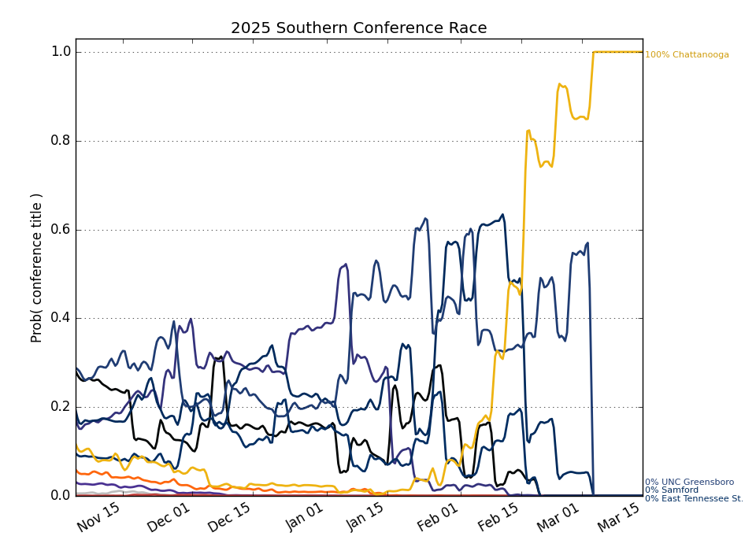

Southern
Updated with games through Sunday, January 18
Conference Projections
Based on 10,000 simulations of the remaining season.
Tiebreaking was done using the
Big Ten tiebreaking procedures.
| Southern |
Current Record |
Projected Record |
Projected Finish (% odds, with tiebreakers) |
|
Team |
Conf. |
Overall |
Conf. |
Overall |
1st | 2nd | 3rd | 4th | 5th | 6th | 7th | 8th | 9th | 10th |
| 1. |
East Tennessee St. (114) |
5 - 1 |
11 - 6 |
14.3 - 3.7 |
20.3 - 8.7 |
64.2 | 23.1 | 9.2 | 3.0 | 0.5 | 0.0 | 0.0 | | | |
| 2. |
Mercer (136) |
4 - 2 |
9 - 7 |
13.3 - 4.7 |
18.3 - 9.7 |
22.9 | 45.0 | 21.8 | 7.9 | 1.8 | 0.6 | 0.1 | | | |
| 3. |
Furman (175) |
4 - 2 |
10 - 6 |
11.8 - 6.2 |
17.8 - 10.2 |
8.9 | 19.6 | 34.0 | 26.4 | 7.4 | 2.6 | 0.9 | 0.3 | 0.0 | |
| 4. |
Wofford (225) |
4 - 2 |
10 - 7 |
10.9 - 7.1 |
16.9 - 12.1 |
3.8 | 10.8 | 26.6 | 31.7 | 15.2 | 7.4 | 3.3 | 1.0 | 0.1 | 0.0 |
| 5. |
Chattanooga (274) |
3 - 3 |
6 - 10 |
8.6 - 9.4 |
11.6 - 16.4 |
0.2 | 0.9 | 4.3 | 14.2 | 30.0 | 22.3 | 15.8 | 9.4 | 2.3 | 0.6 |
| 6. |
Samford (260) |
2 - 4 |
7 - 10 |
7.9 - 10.1 |
12.9 - 16.1 |
0.0 | 0.3 | 1.7 | 7.0 | 16.3 | 23.9 | 25.5 | 19.2 | 5.2 | 0.8 |
| 7. |
UNC Greensboro (303) |
3 - 3 |
5 - 12 |
7.6 - 10.4 |
9.6 - 19.4 |
0.0 | 0.1 | 1.4 | 5.3 | 15.5 | 21.2 | 22.9 | 23.9 | 7.6 | 2.1 |
| 8. |
Western Carolina (285) |
2 - 4 |
4 - 11 |
7.3 - 10.7 |
9.3 - 17.7 |
0.0 | 0.2 | 1.1 | 4.3 | 12.5 | 19.4 | 24.7 | 26.1 | 8.9 | 2.7 |
| 9. |
The Citadel (352) |
2 - 4 |
2 - 14 |
4.5 - 13.5 |
4.5 - 23.5 |
| | | 0.1 | 0.5 | 1.5 | 4.2 | 12.2 | 48.6 | 32.8 |
| 10. |
VMI (347) |
1 - 5 |
3 - 13 |
3.9 - 14.1 |
5.9 - 22.1 |
| | | 0.1 | 0.3 | 1.0 | 2.7 | 7.8 | 27.1 | 61.0 |
Weekly Changes |
| 1. |
East Tennessee St. (114) |
|
-8.0 | +5.1 | +2.0 | +0.7 | +0.2 | -0.0 | +0.0 | +0.0 | +0.0 | +0.0 |
| 2. |
Mercer (136) |
|
+9.9 | +5.5 | -6.9 | -5.0 | -2.2 | -0.7 | -0.5 | -0.2 | -0.0 | +0.0 |
| 3. |
Furman (175) |
|
-2.2 | -8.1 | +3.0 | +7.2 | +0.3 | -0.2 | -0.0 | +0.0 | +0.0 | +0.0 |
| 4. |
Wofford (225) |
|
+0.5 | -0.9 | +3.9 | -3.9 | -0.3 | +0.5 | +0.2 | +0.1 | -0.1 | +0.0 |
| 5. |
Chattanooga (274) |
|
+0.2 | +0.7 | +3.3 | +10.5 | +20.0 | +5.4 | -7.2 | -16.1 | -12.6 | -4.1 |
| 6. |
Samford (260) |
|
-0.3 | -1.5 | -3.6 | -6.4 | -9.4 | +0.3 | +8.7 | +9.4 | +2.4 | +0.4 |
| 7. |
UNC Greensboro (303) |
|
-0.0 | -0.7 | -1.5 | -2.6 | -6.7 | -2.0 | +2.9 | +9.7 | +0.9 | +0.1 |
| 8. |
Western Carolina (285) |
|
-0.0 | -0.1 | -0.3 | -0.4 | -0.9 | -0.8 | +0.9 | +4.0 | -2.3 | -0.2 |
| 9. |
The Citadel (352) |
|
+0.0 | +0.0 | +0.0 | +0.0 | +0.4 | +0.7 | +1.4 | +4.4 | +25.0 | -31.8 |
| 10. |
VMI (347) |
|
+0.0 | +0.0 | -0.1 | -0.2 | -1.3 | -3.2 | -6.3 | -11.3 | -13.3 | +35.7 |
This table gives the probability of earning at least a share of a given place.
So there are no tiebreakers and there can be multiple first place teams, for example.
|
Projected Finish (% odds, no tiebreakers) |
|
Team |
Outright |
1st | 2nd | 3rd | 4th | 5th | 6th | 7th | 8th | 9th | 10th |
| 1. |
East Tennessee St. |
51.4 | 70.8 | 20.7 | 6.6 | 1.7 | 0.2 | 0.0 | 0.0 | | | |
| 2. |
Mercer |
19.9 | 37.9 | 42.1 | 14.4 | 4.5 | 1.0 | 0.1 | 0.0 | | | |
| 3. |
Furman |
4.4 | 11.3 | 23.0 | 38.1 | 20.5 | 5.0 | 1.5 | 0.6 | 0.1 | 0.0 | |
| 4. |
Wofford |
1.9 | 5.5 | 13.8 | 28.6 | 34.5 | 10.7 | 4.4 | 1.8 | 0.5 | 0.1 | 0.0 |
| 5. |
Chattanooga |
0.0 | 0.2 | 1.4 | 6.0 | 16.4 | 32.8 | 21.4 | 13.8 | 6.5 | 1.2 | 0.2 |
| 6. |
Samford |
0.0 | 0.1 | 0.6 | 3.0 | 10.1 | 22.7 | 25.4 | 21.8 | 13.2 | 2.8 | 0.5 |
| 7. |
UNC Greensboro |
0.0 | 0.0 | 0.4 | 2.4 | 7.9 | 19.2 | 23.2 | 22.1 | 19.0 | 4.8 | 1.0 |
| 8. |
Western Carolina |
0.0 | 0.0 | 0.2 | 1.6 | 6.4 | 17.3 | 20.8 | 22.9 | 22.9 | 6.4 | 1.5 |
| 9. |
The Citadel |
0.0 | | | | 0.2 | 0.9 | 2.5 | 6.5 | 15.8 | 48.2 | 25.9 |
| 10. |
VMI |
0.0 | | | | 0.1 | 0.5 | 1.5 | 3.8 | 10.5 | 33.9 | 49.7 |
